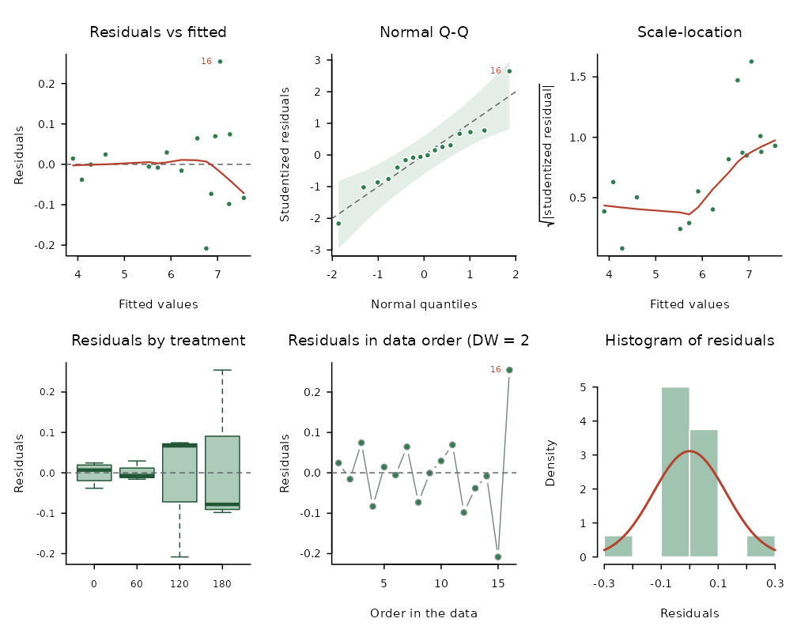
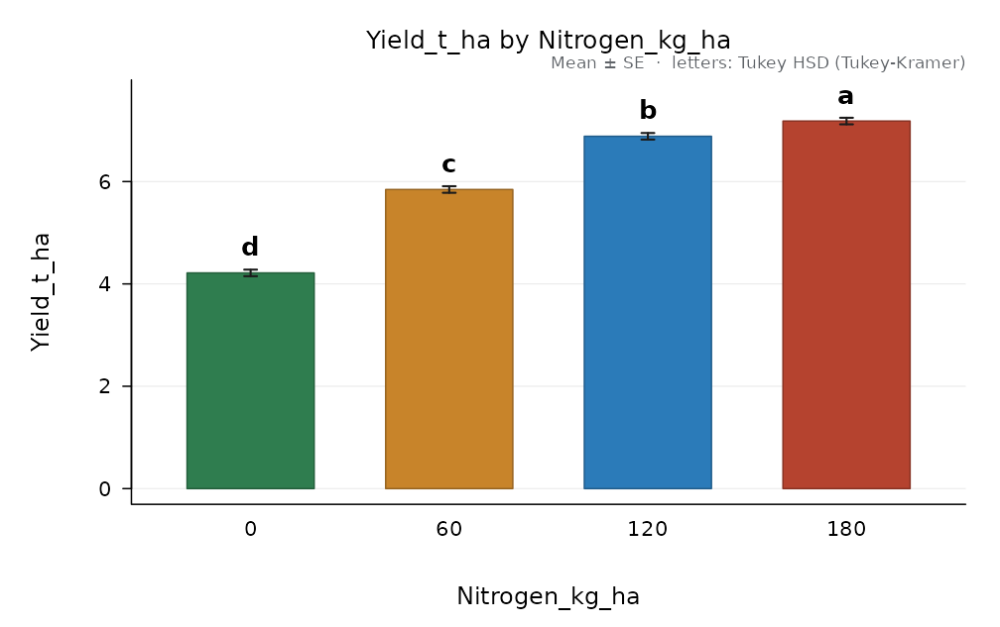
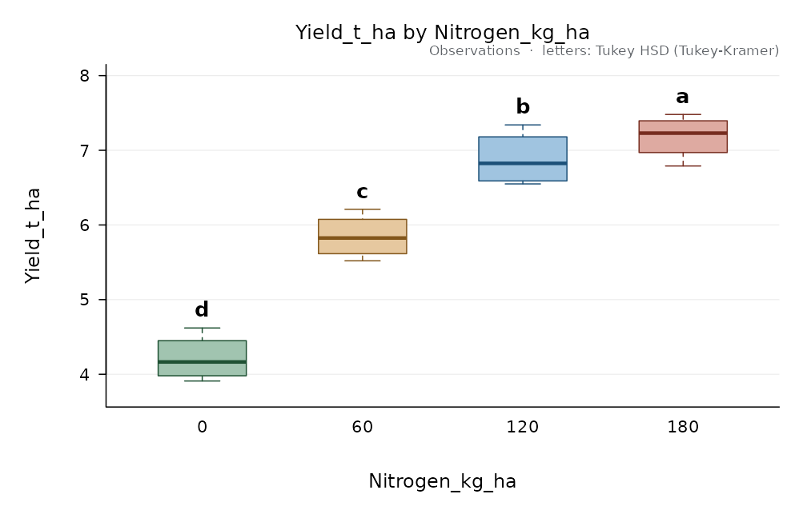
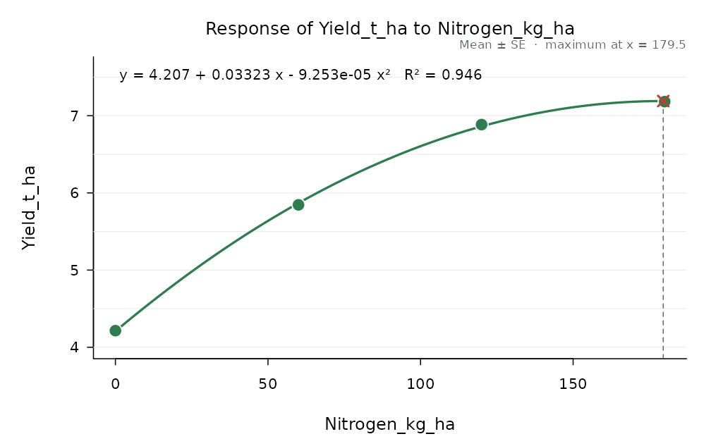

AgriDesign follows the steps of the analysis of a field trial: fit the model of the design, check its assumptions, compare the treatments, draw the figures and write the report. This vignette walks through them with a maize trial: four nitrogen rates in a randomised complete block design with four blocks.
library(AgriDesign)
head(maize_nitrogen)
#> Block Nitrogen_kg_ha Yield_t_ha
#> 1 1 0 4.62
#> 2 1 60 6.21
#> 3 1 120 7.34
#> 4 1 180 7.48
#> 5 2 0 3.91
#> 6 2 60 5.521. The analysis of variance
design_anova() takes the data in long format (one row
per plot) and the role of each column: the response, the treatment
factor(s), the blocks (or the rows and columns of a Latin square) and,
if any, covariates. When design is not given, it is
suggested from the roles.
fit <- design_anova(maize_nitrogen, response = "Yield_t_ha", treatment = "Nitrogen_kg_ha",
block = "Block")
fit
#>
#> Randomised complete block design (RCBD)
#> Response: Yield_t_ha (n = 16)
#> Type III sums of squares
#>
#> Df Sum Sq Mean Sq F value Pr(>F)
#> Block 3 1.0691 0.35637 21.69 1.864e-04 ***
#> Nitrogen_kg_ha 3 21.5509 7.18362 437.27 4.591e-10 ***
#> Residuals 9 0.1479 0.01643
#> ---
#> Signif. codes: 0 '***' 0.001 '**' 0.01 '*' 0.05 '.' 0.1 ' ' 1
#>
#> Grand mean = 6.03188 CV = 2.12 % R-squared = 0.9935The designs that can be analysed, and the roles each one needs, are
listed by designs():
designs()[, c("id", "name")]
#> id
#> 1 crd
#> 2 rcbd
#> 3 grcbd
#> 4 latin
#> 5 graeco
#> 6 youden
#> 7 bib
#> 8 ibd
#> 9 augmented
#> 10 fact_crd
#> 11 fact_rcbd
#> 12 split_rcbd
#> 13 split_crd
#> 14 strip_rcbd
#> 15 splitsplit_rcbd
#> 16 nested
#> name
#> 1 Completely randomised design (CRD)
#> 2 Randomised complete block design (RCBD)
#> 3 Generalised RCBD (several plots per block x treatment)
#> 4 Latin square
#> 5 Graeco-Latin square
#> 6 Youden square (incomplete Latin square), intra-block analysis
#> 7 Incomplete blocks without replicate grouping (BIBD, cyclic), intra-block analysis
#> 8 Incomplete block design (lattice, alpha, BIBD), intra-block analysis
#> 9 Augmented design (replicated checks + unreplicated entries)
#> 10 Factorial in CRD
#> 11 Factorial in RCBD
#> 12 Split-plot in RCBD (main plots in blocks)
#> 13 Split-plot in CRD (main plots completely randomised)
#> 14 Strip-plot (split-block) in RCBD
#> 15 Split-split-plot in RCBD
#> 16 Nested (hierarchical): second factor within the first2. Assumptions
check_assumptions() runs the usual checks on the
residuals and summarises them in a grade from A (satisfied) to D
(several assumptions fail).
check_assumptions(fit)
#>
#> Assumptions of the ANOVA for Yield_t_ha (alpha = 0.05)
#>
#> Check Test Statistic df p Rating
#> normality Shapiro-Wilk W = 0.9304 0.2477 ok
#> normality Anderson-Darling A2 = 0.4947 0.1840
#> normality Jarque-Bera JB = 2.303 2 0.3162
#> variances Levene (median) F = 0.5348 3, 12 0.6672 ok
#> variances Levene (mean) F = 4.27 3, 12 0.0287
#> variances Bartlett K2 = 0.1708 3 0.9822
#> variances Fligner-Killeen X2 = 1.314 3 0.7259
#> variances Hartley Fmax Fmax = 1.549
#> additivity Tukey one-degree-of-freedom F = 0.0548 1, 8 0.8208 ok
#> extremes |studentized residual| > 3 count = 0 ok
#> independence Durbin-Watson (data order) d = 2.451 ok
#>
#> Observations with |studentized residual| > 2.5:
#> row group observed fitted studentized
#> 16 180 7.31 7.056 2.646
#>
#> Grade A. Assumptions satisfied. Proceed with the analysis of variance on this scale.Observation 16 has a studentized residual of 2.65; it is worth checking in the field book, but on its own it does not invalidate the analysis. The residual plots show the same picture:
plot(fit)
When an assumption fails, transformations() compares the
candidate transformations on the same model and suggests one, and
nonparametric() offers rank-based alternatives. In the
tomato factorial the block and treatment effects are multiplicative and
the logarithm removes the problem:
tom <- design_anova(tomato_factorial, "Yield_kg_plant", c("Variety", "Fertilizer"), block = "Block")
transformations(tom)$verdict
#> [1] "Suggested: Natural logarithm ln(y). It is the power closest to the Box-Cox estimate and it satisfies the checks (smallest p = 0.2204 vs 2.346e-06 on the original scale). Means are compared on the transformed scale; report them back-transformed."
tom_log <- design_anova(tomato_factorial, "Yield_kg_plant", c("Variety", "Fertilizer"),
block = "Block", transform = "log")
check_assumptions(tom_log)$grade
#> [1] "A"3. Comparing the treatments
compare_means() separates the least-squares means with
one of eleven procedures and labels them with letters: means that share
a letter do not differ.
cmp <- compare_means(fit, "Nitrogen_kg_ha", method = "tukey")
cmp
#>
#> Tukey HSD (Tukey-Kramer), alpha = 0.05
#> Response: Yield_t_ha compared: Nitrogen_kg_ha
#> Error: Residual error (MS = 0.01643, df = 9)
#> Minimum significant difference = 0.2829
#>
#> Nitrogen_kg_ha n mean se raw_mean sd group
#> 180 4 7.183 0.06409 7.183 0.2943 a
#> 120 4 6.885 0.06409 6.885 0.3663 b
#> 60 4 5.845 0.06409 5.845 0.2978 c
#> 0 4 4.215 0.06409 4.215 0.3101 d
#>
#> Means sharing a letter do not differ.Nitrogen rates are quantitative, so the trend is more informative
than the letters. trend() splits the sum of squares into
orthogonal polynomial components and fits the curve:
tr <- trend(fit, "Nitrogen_kg_ha")
tr
#>
#> Trend analysis of Yield_t_ha on Nitrogen_kg_ha (error: Residual error)
#>
#> component coefficients ss F df_error p
#> Linear -3, -1, 1, 3 19.770661 1203.4388 9 6.788e-11
#> Quadratic 1, -1, -1, 1 1.775556 108.0780 9 2.587e-06
#> Cubic -1, 3, -3, 1 0.004651 0.2831 9 6.075e-01
#>
#> Highest significant component: quadratic.
#> Fitted response: y = 4.207 + 0.03323 x - 9.253e-05 x^2 R-squared = 0.946
#> Maximum response at x = 179.5 (y = 7.19); at the edge of the levels testedPlanned comparisons are tested with
test_contrasts():
test_contrasts(fit, "Nitrogen_kg_ha", rbind("control vs fertilised" = c(3, -1, -1, -1),
"120 vs 180" = c(0, 0, 1, -1)))
#> contrast estimate se t p ss F df_error
#> 1 control vs fertilised -7.2675 0.22200319 -32.73602 1.139670e-10 17.6055187 1071.64674 9
#> 2 120 vs 180 -0.2975 0.09063242 -3.28249 9.491459e-03 0.1770125 10.77474 94. Figures
Every result has a plot() method, and
save_figure() writes it at the size and resolution a
journal asks for (PNG and TIFF carry the resolution in their header;
PDF, SVG and EPS are vector formats).
plot(cmp)
plot(cmp, style = "box")
plot(tr)
save_figure("figure1.tiff", plot(cmp), width = 8.5, height = 6.5, units = "cm", res = 600)5. The report
design_report() writes all of the above in one
self-contained HTML file: a materials and methods paragraph, descriptive
statistics, the assumption checks, the analysis of variance with a draft
of the results, the means with their letters, trends, figures and
appendices. Open it in a browser and print it to PDF from there.
design_report(fit, "maize-report.html", title = "Nitrogen rates in maize",
authors = "A. Author", units = "t/ha")Where next
-
vignette("designs", package = "AgriDesign"): factorials, split-plots, Latin and Graeco-Latin squares, incomplete blocks and covariates. -
vignette("planning", package = "AgriDesign"): randomised layouts, field books and the number of replicates. -
vignette("breeding", package = "AgriDesign"): AMMI, stability, line x tester, diallels and North Carolina designs. -
vignette("more-tests", package = "AgriDesign"): further rank-based tests and plant pathology tools.